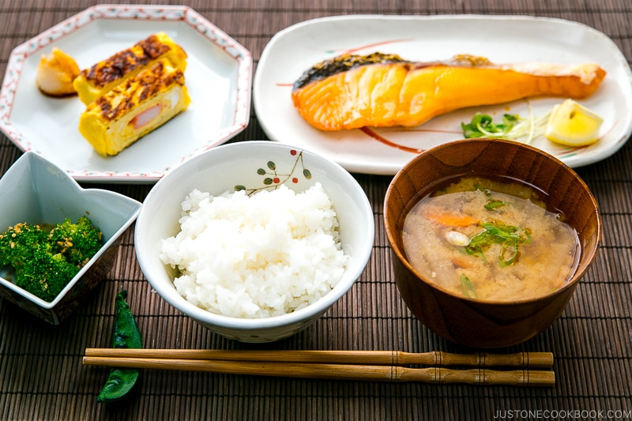
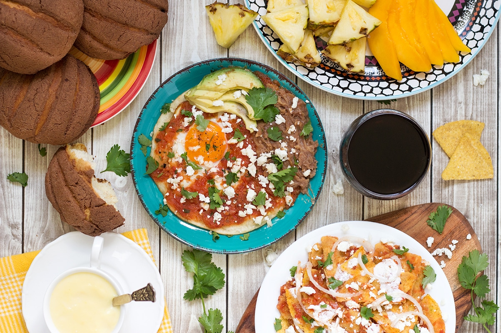
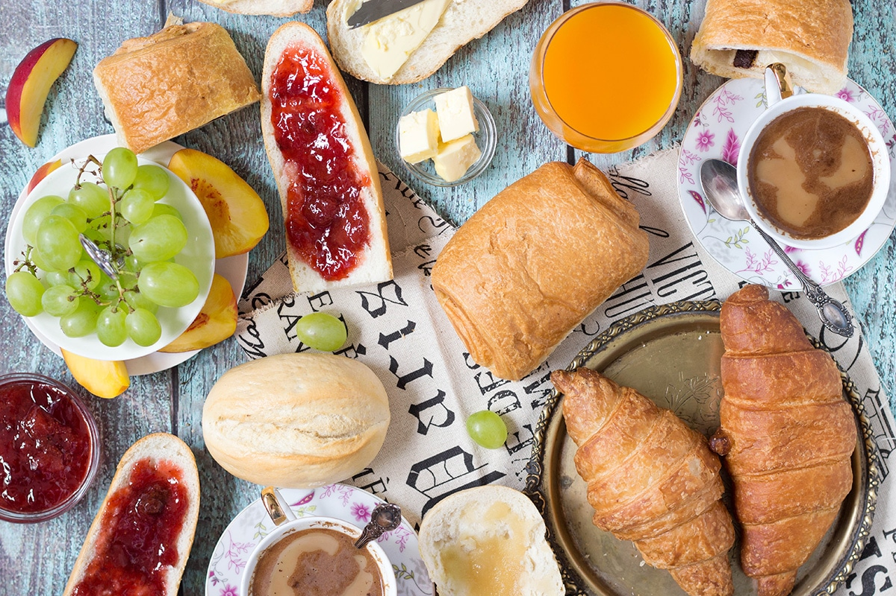
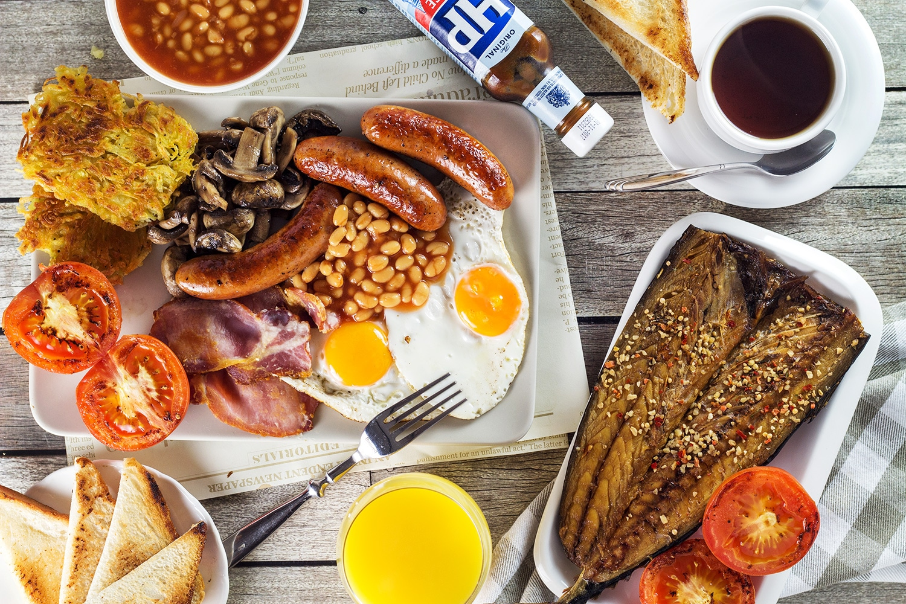

Breakfast Around the World
Breakfast around the world offers a diverse and flavorful way to begin the day, with each culture bringing its own unique twist to morning meals.

Japan: A traditional Japanese breakfast often includes steamed rice, miso soup, grilled fish, and pickled vegetables.

Mexico: Breakfast may include chilaquiles, which are fried tortillas topped with green or red sauce, eggs, and cheese.

France: French breakfasts often feature fresh croissants, baguettes with butter and jam, and a café au lait.

England: A traditional English breakfast typically includes eggs, bacon, sausage, black pudding, baked beans, and more.